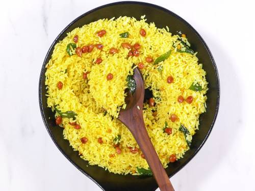

Lemon Rice under 10 mins! Yes,it so amazingly delicious.

Let's start
1.Prepare the Base: Heat vegetable oil in a pan over medium heat. Add mustard seeds and chana dal, letting them sizzle until the mustard seeds begin to pop.
2.Add Spices and Onions:Stir in curry leaves, turmeric powder, red chili powder, and hing. Add the finely chopped onion and cook until golden brown.
3.Add Lemon and Rice: Squeeze the juice of a whole lemon into the pan. Add the cooked rice and mix gently to combine all ingredients.
4.Finish with Peanuts:Sprinkle a handful of roasted peanuts on top, giving the dish a crunchy texture.
5.Serve:Serve warm, and enjoy your quick and flavorful lemon rice.
This recipe is perfect for those looking to enjoy a simple yet satisfying meal. It's a reminder that even the busiest nights can be brightened with a homemade dish that requires little effort but offers immense flavor. Enjoy your cooking journey!